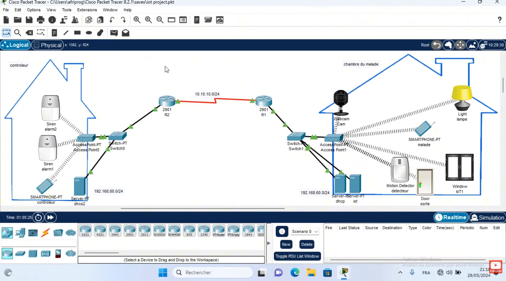

Conception et stimulation d'une infrastructure de reseau complète incluant le routage inter-VLAN, la sécurité des ports et la configuration de serveurs DHCP.
Configuration d'un environnement Active Directory (AD), Gestion Des Droits Utilisateurs (GPO) et mise en place d'un systeme de surveillance du trafic reseau.